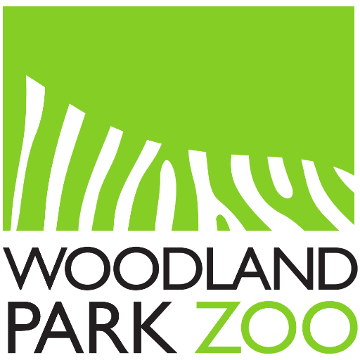

×

Otter Spotter
×
Filters
Click on a button to filter the sightings
Highly confident otter sightings
Otter sightings with pups present
Observations of live otters
Observations of otter signs (tracks, slides, etc.)
Observations that have comments
No Filter
Summary
Otter Spotter Photos
Woodland Park Zoo's Otter Spotter Community Science Initiative
Otter Sightings Map
☰ Menu